descartada
El ramo con curita
Hablaba de una herida, pero no del recuerdo. Sin una foto, la idea del disparo se perdía y quedaba muy parecida a la portada original.
estudio de caso · 01
Rediseño de la portada del álbum de Morat. Cada canción es un disparo y cada foto un recuerdo.
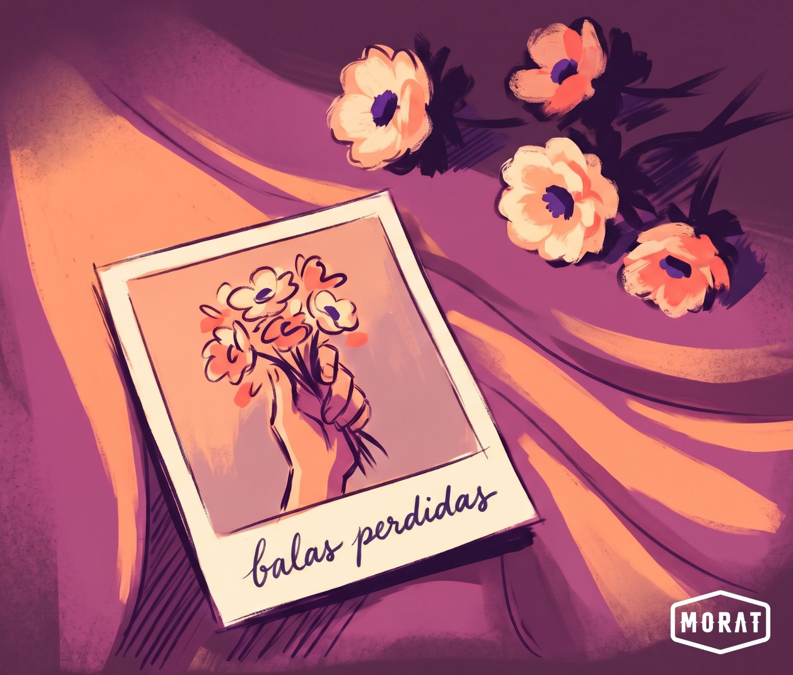
acto 1 · el conflicto y el brief
¿Cuál era la necesidad?
Balas perdidas es el segundo álbum de estudio de Morat, banda colombiana de folk-pop nacida en Bogotá. Salió en 2018 con 12 canciones, entre ellas Besos en guerra, Cuando nadie ve, Punto y aparte y El embrujo.
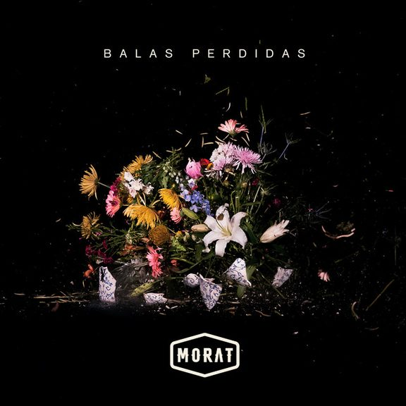
La portada original muestra un ramo de flores sobre fondo negro. Es bonita, pero no explica la idea que hay detrás del nombre. El disco necesitaba una imagen que contara su concepto.
Proyecto académico de la materia Diseño Contexto. El encargo era elegir un álbum que ya existe y rediseñar su portada y su contraportada.
Oyentes de Morat, sobre todo jóvenes, que viven sus canciones de amor y desamor como recuerdos propios.
acto 2 · el proceso y la transformación
¿Cómo pensé y probé la solución?
Seguí las cinco etapas del design thinking. Estas son las partes del proceso. Toca una para ir directo.
empatizar y definir
Investigué entrevistas y publicaciones de Morat. La banda cuenta que a veces escribe una canción pensando en una persona, pero termina llegando a otras, y a cada quien le llega distinto.
Por eso el disco se llama Balas perdidas. Son canciones que van y vienen sin avisar y alcanzan a quien no esperaban.
¿Para quién es una canción?
para quien la escribió… y para quien la necesita
insight
Una canción, igual que una fotografía, se convierte en un recuerdo que cada persona guarda a su manera.
reto de diseño
¿Cómo podríamos crear una imagen que muestre que las canciones de Balas perdidas llegan a cada persona de forma distinta y se vuelven recuerdos?
idear
Pasa el mouse por cada idea para ver con qué se conecta. Toca cada idea para ver con qué se conecta.
conexión clave: la bala dispara… y la cámara también
concepto central
disparos que se vuelven recuerdos
herramienta creativa · moodboard
Estas referencias definieron la atmósfera. Fotografía instantánea, flores ilustradas, papel envejecido, atardeceres y tonos violeta y durazno.
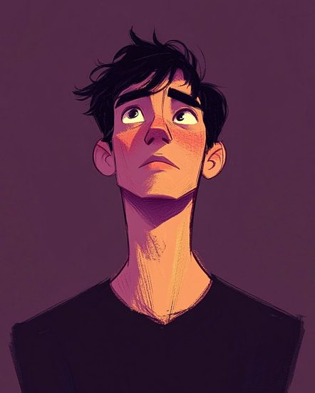
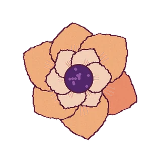
herramienta creativa · SCAMPER aplicado a la bala perdida
Pasa el mouse por cada letra para darla vuelta. Toca cada letra para darla vuelta.
prototipar
Probé tres ideas a lápiz y después a color. Pasa las hojas del bloc para verlas. La segunda, la polaroid, fue la elegida.
bocetos
balas perdidas · proceso
haz clic o arrastra de lado para pasar la hojadesliza con el dedo para pasar la hoja
idea 1 · el ramo flores atadas con una curita
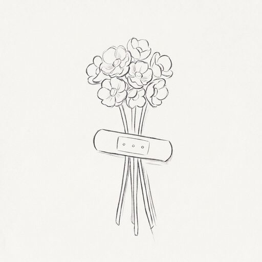
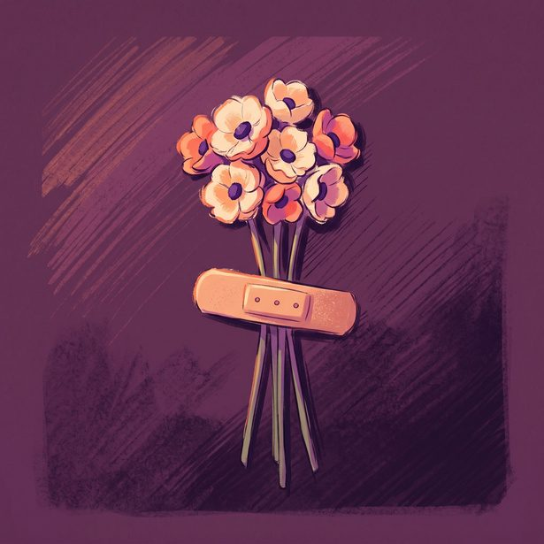
idea 2 · la polaroid el recuerdo adentro, la vida real afuera

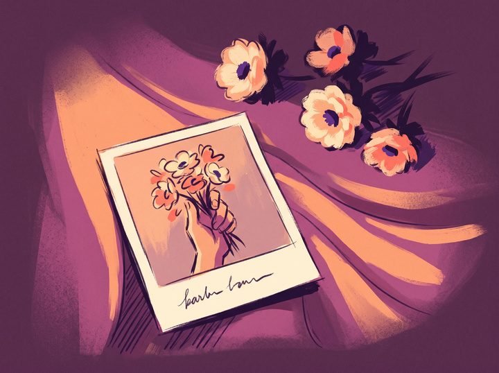
idea 3 · la cámara la cámara que dispara recuerdos
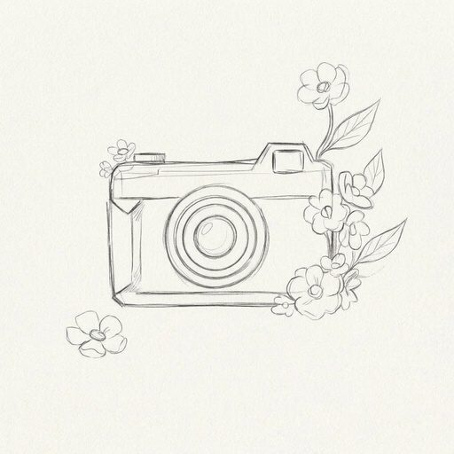
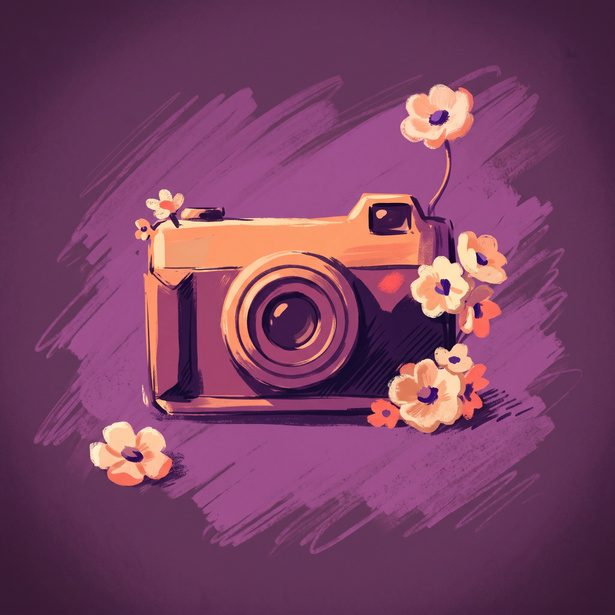
imagen y materiales decisiones finales
fin del bloc
prototipar
Dos de las tres ideas no pasaron a la portada final. Así decidí.
Hablaba de una herida, pero no del recuerdo. Sin una foto, la idea del disparo se perdía y quedaba muy parecida a la portada original.
Explicaba el disparo de forma muy directa y la cámara le quitaba protagonismo a las flores. Se sentía más fría que el disco.
Junta las dos ideas. La foto es el disparo y también el recuerdo, y las flores salen del marco hacia la vida real.
prototipar
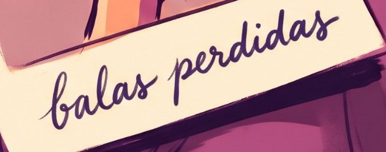
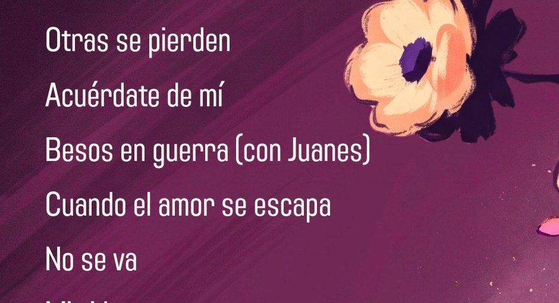
Se respetó tal cual, en blanco, en una esquina. Así la marca de la banda se reconoce sin competir con la ilustración.
prototipar
Probé la misma paleta en las tres ideas. El morado de fondo da la melancolía y el durazno da la calidez del recuerdo.
la paleta final del disco · el color como emoción
Haz clic en un color para copiar su código.Toca un color para copiar su código.
evaluar
Mostré la propuesta a mis compañeros y a mi docente para comprobar si la idea se entendía sin explicarla.
Se reconoció la relación entre cámara, recuerdo y canción.
Más contraste en las flores de afuera. Un título más legible que no le quite protagonismo a la ilustración. Una letra manuscrita mejor trabajada.
acto 3 · el desenlace y el impacto
¿Cuál fue el resultado final y cómo funciona en la vida real?
Polaroids con flores adentro, que son el recuerdo, y las mismas flores afuera, en la vida real. Cada foto es una bala perdida que alcanzó a alguien.
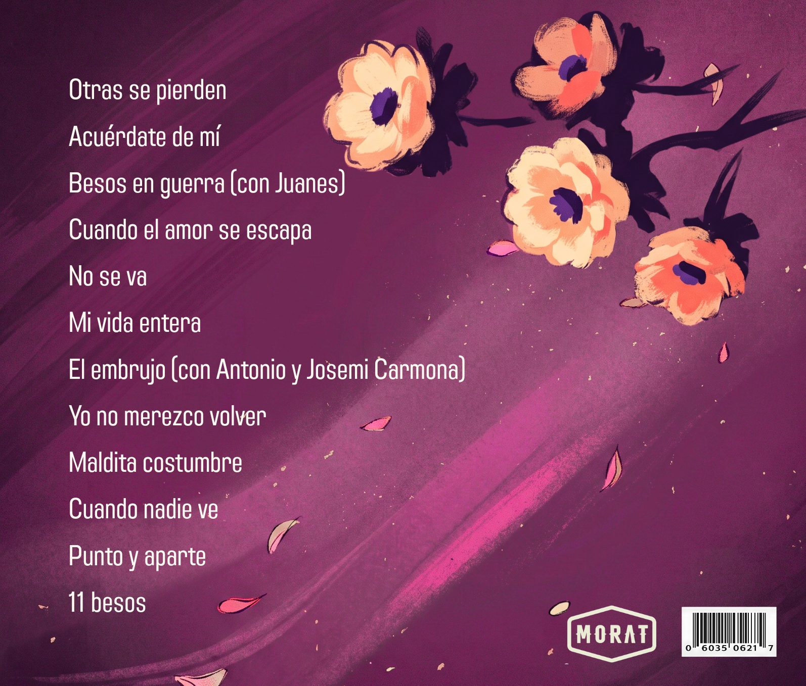
viendo · portada
portada y contraportada
La contraportada sigue la misma escena. Las flores continúan fuera del marco y acompañan la lista de canciones.
Arrastra el disco de lado o usa el botón para darlo vuelta.Desliza el disco con el dedo o toca el botón para darlo vuelta.
antes y después
Mueve la línea para comparar la portada original con el rediseño.
la pieza en la vida real · mockups
el impacto
Las canciones, como las fotos, se disparan sin saber a quién alcanzarán.
Cada persona las guarda como un recuerdo distinto.
una bala perdida que se vuelve un recuerdo que florece
sección electiva · postmortem
¿Qué aprendí con este proyecto?
Cambiar la bala por el disparo de una cámara. Con un solo cambio el título se entendió sin violencia.
El contraste de las flores de afuera y la legibilidad del título, para que no compitieran con la ilustración.
Un objeto cotidiano, como una polaroid, puede contar una idea de forma poética.
Probar la portada con más oyentes de Morat, no solo en clase, para ver si la idea llega igual.